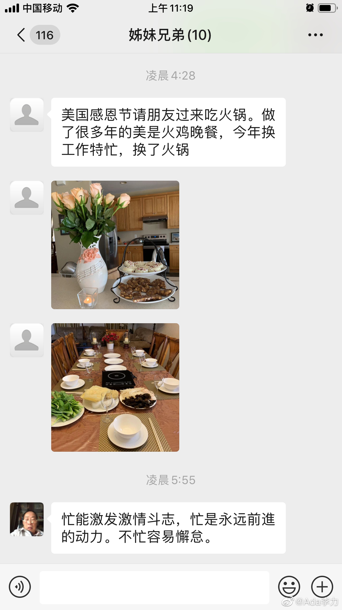

- 

Ada李力
2019-11-29
Ada李力
2019-11-29
#不明所以#
这个月双11前，在培训课上听到讲师问大家，购物车里有没有准备凌晨抢的东西，如果没有，就说明你老了。
我当时很羞赧，因为确实没有想凌晨抢的东西，而且当时想了想，好像也没有特别想买的东西，想要的东西，貌似都有了。我真的老了？
但这几天发现不是这么回事，我还是想要很多东西的。没买的原因：要么是超出我现在的能力；要么是权衡下，优先级没那么高，那暂时存在商家那里；要么是虽然买得起，但因为占空间，也会让我放弃。
现在买东西跟年轻时的区别是：买进来，同时也是丟出去的时刻。我更喜欢把家里破旧物件扔出去的感觉，因为喜欢这种感觉，最近我很主动承担了家里倒垃圾的任务，垃圾袋都用得嗖嗖快。而且橱柜里越来越空旷，是个让我很有成就感的事情。
流水不腐，户枢不蠹，也适用于家居用品的更新换代上。
这个月双11前，在培训课上听到讲师问大家，购物车里有没有准备凌晨抢的东西，如果没有，就说明你老了。
我当时很羞赧，因为确实没有想凌晨抢的东西，而且当时想了想，好像也没有特别想买的东西，想要的东西，貌似都有了。我真的老了？
但这几天发现不是这么回事，我还是想要很多东西的。没买的原因：要么是超出我现在的能力；要么是权衡下，优先级没那么高，那暂时存在商家那里；要么是虽然买得起，但因为占空间，也会让我放弃。
现在买东西跟年轻时的区别是：买进来，同时也是丟出去的时刻。我更喜欢把家里破旧物件扔出去的感觉，因为喜欢这种感觉，最近我很主动承担了家里倒垃圾的任务，垃圾袋都用得嗖嗖快。而且橱柜里越来越空旷，是个让我很有成就感的事情。
流水不腐，户枢不蠹，也适用于家居用品的更新换代上。